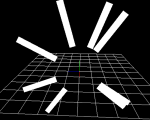

08. 生成方法でパーティクルを並べよう！¶
概要¶
本章では、生成方法を変更して、パーティクルを一定間隔で並べてみます。 生成方法では、パーティクルの最初の姿勢を指定できます。 ノードの親子関係を使えば同じようなことを再現できますが、同じことを簡単に実現できます。
本章で作成するエフェクト1
本章で作成するエフェクト2
本章で作成するエフェクト3
生成方法¶
Effekseerでは、生成方法を指定できます。 生成方法では、パーティクルが生成されたときの最初の姿勢を指定できます。 例えば、パーティクルを円形に配置したり、球形に配置したりできます。

生成方法
位置だけでなく、角度も指定できます。 例えば、パーティクルの上方向が球の外側を向く、といったことができます。

角度指定なし |

角度指定あり |
あらかじめ作成途中のエフェクトを下記のリンクからダウンロードできるようにしました。
円形エフェクト¶
パーティクルを円形に配置します。 パーティクルは時計回りに順番に表示されるようにします。
このエフェクトは親子関係を利用して実現できますが、それはとても面倒です。 複雑な配置を簡単に実現するために、生成方法があります。
effect01.efkprojを開いてください。
「生成方法」のウインドウは初期設定では表示されていません。 メニューバーから「ウインドウ->生成方法」を選択します。 選択すると「生成方法」ウインドウが表示されます。
生成方法
表示したウインドウは、ウインドウのメニューバーを左クリックしつつ、移動することで、ウインドウを移動できます。
移動中に表示される四角に重ねることで、ウインドウを他のパネルに追加することもできます。

タブの間にドラッグ ＆ ドロップすることで、タブに加えることもできます。 (タブのパネルが1つの場合、タブの上にドラッグ ＆ ドロップします。)
「生成方法」ウインドウから、生成方法に円を指定します。 円の半径には4を入力します。
円形にパーティクルが表示されることがわかります。

ランダムに配置されたパーティクル
パーティクルはランダムに配置されているため、順番に出現しません。 順番に出現するように、生成位置種類を正順に変更します。 それに加えて、分割数と生成数を12に変更します。 これは、円を均等に12分割した位置にパーティクルを出現させることを示しています。
円形にパーティクルが均等に表示されることがわかります。 同時に、パーティクルが順番に出現するようになることもわかります。

作成されたエフェクト
球形エフェクト¶
パーティクルを球形に配置してみます。
effect02.efkprojを開いてください。
円形と同じように、球形も設定できます。
「生成方法」ウインドウから生成方法を球に変更します。 球の半径には4を入力します。 さらに、全方位にパーティクルを配置するためにX軸角度とY軸角度の振れ幅には360度を入力します。
球形にパーティクルが配置されていることがわかります。
作成されたエフェクト
角度の影響¶
球の外側方向に向けてパーティクルが飛ぶようにしてみます。
effect03.efjprojを開いてください。
球の上方向にパーティクルが飛んでいくのがわかります。

上方向にパーティクルが飛んでいくエフェクト
ただ、実際、球形にパーティクルを配置する場合、球の内側方向や外側方向に飛んでほしいことが多いです。 そのような場合、角度に影響にチェックします。 これにチェックすると、生成されるときにパーティクルの上方向が球の外側方向に一致するように回転させます。
今回の場合、上方向に向かっていたパーティクルが球の外側方向に向かうようになります。
チェックすると、球の外側方向にパーティクルが飛んでいくのがわかります。

作成されたエフェクト
最後に、本章で作成されたエフェクトをダウンロードできるようにしてみました。
まとめ¶
本章では、生成方法を変更して、パーティクルを円形や直線状に配置しました。 次章では、ここまでで学んだ知識を元に実践的なエフェクトを作成します。